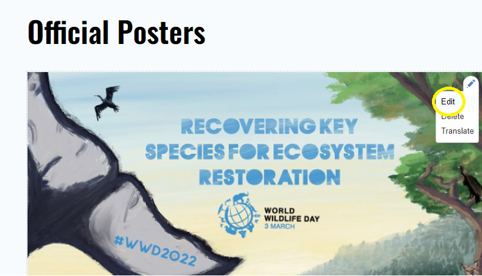
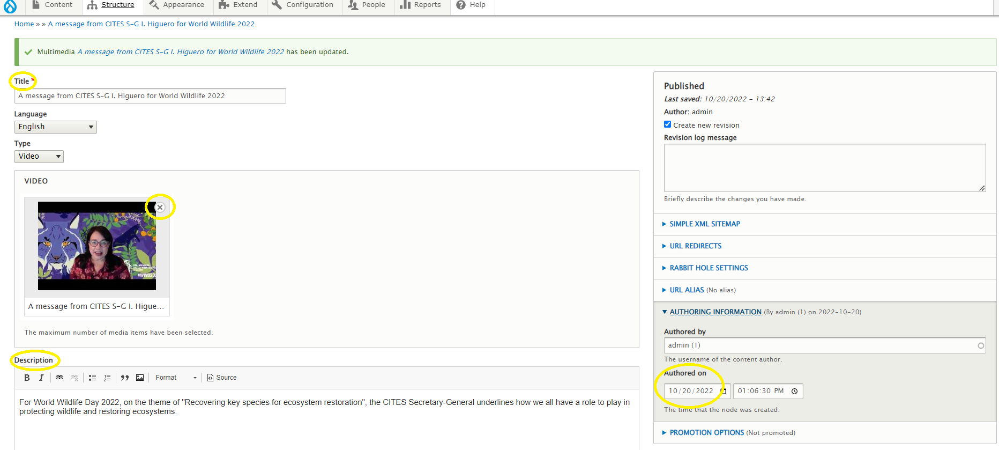
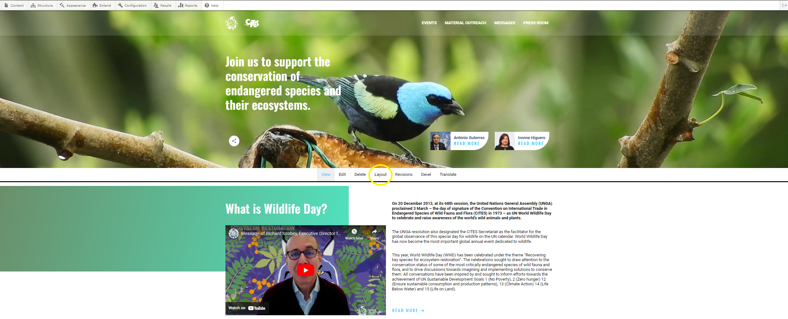
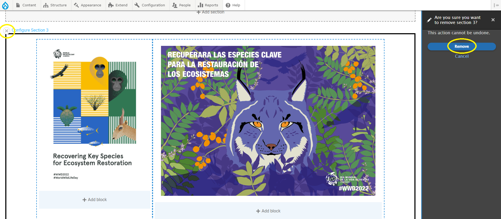
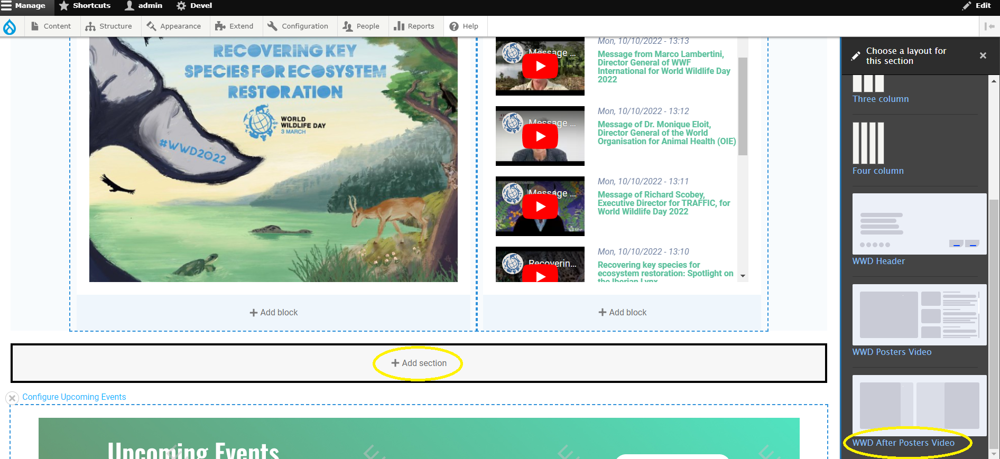
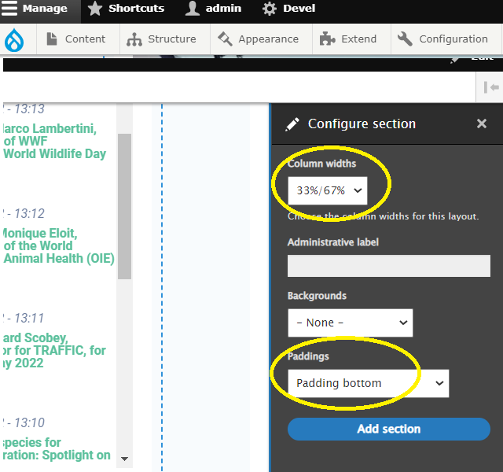
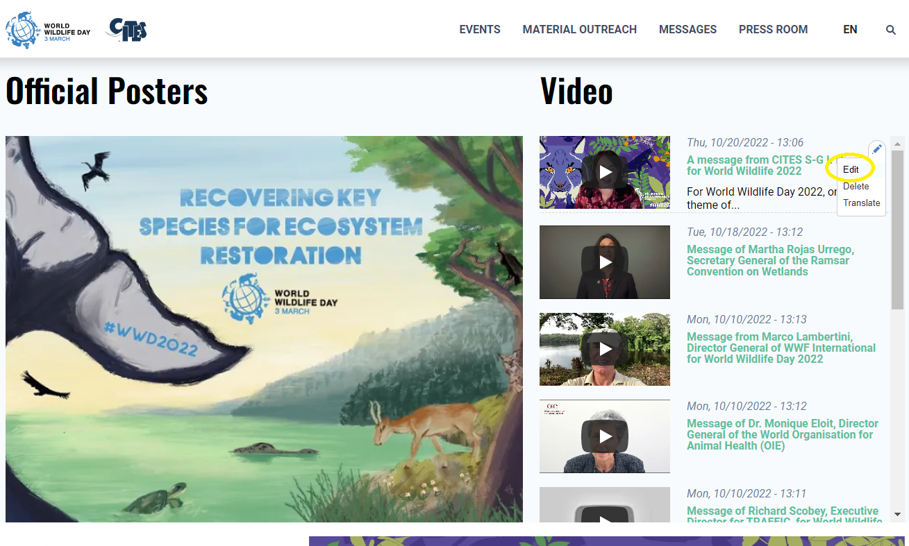

Introduction
The multimedia content type includes the images and video type fields. A custom block with a title and image is on the top left side of the section, the video block is on the top right side. Video title is redirecting the user to the Material Outreach page. Video block contains published date, and name at a maximum of 108 characters. This is a view block that admin user can configure to appear in a standard block region or landing page region. Official posters section includes:
Configure posters
1To edit the poaster, a logged-in user should click on Edit button where the image can be changed, added an URL, click on Save button to see the changes applied:
Configure video
1To edit the video, a logged-in user should click on Edit button where user is able to edit the Title, the video link/file, description and the posting date:
Add/remove posters
1As a logged-in user, click on Lauout on the Administrative menu, then scroll to posters section:
2To remove posters section, within the configuration block, click on "x" at configure section button, then remove the section:
3To add a posters section, within the configuration block, click on "add section", then on predefined WWD After Posters button:
4Into a Configure section, select Column widht, and padding to the bottom:
5Into a created section, Add a block -> Create a Custom block -> Multimedia block -> individual poter. Repeat the same action for created section on the right side and save the layout to see the changes on the site.

Add/remove video
1As a logged-in user, click on Edit button from the video section to access the configuration menu:
2Within the configuration block, admin user is able to edit the title of the video, description, date, remove the existing video and add another one instead: